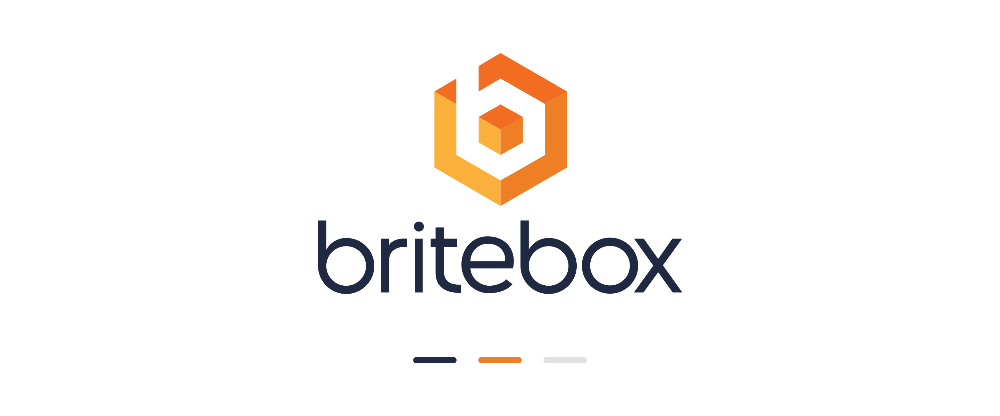
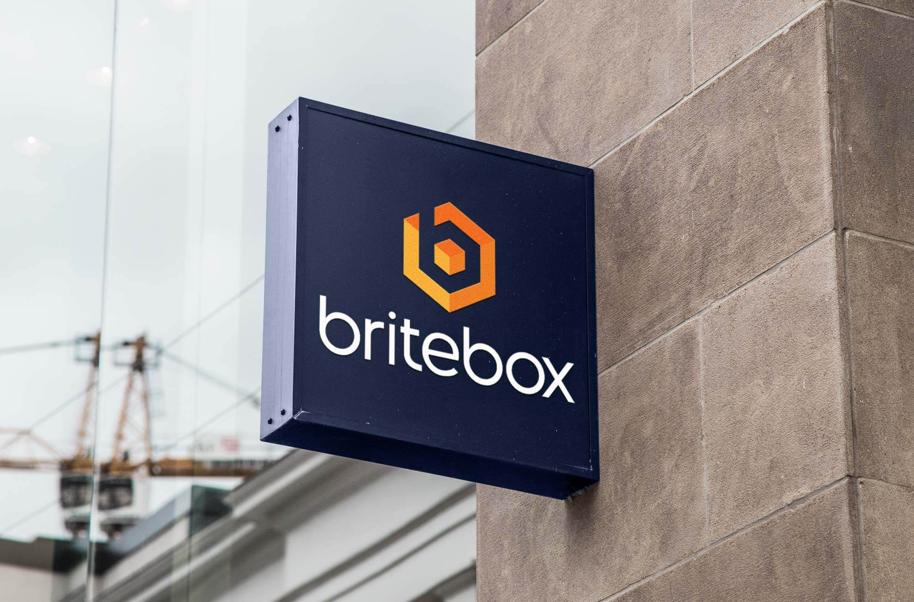
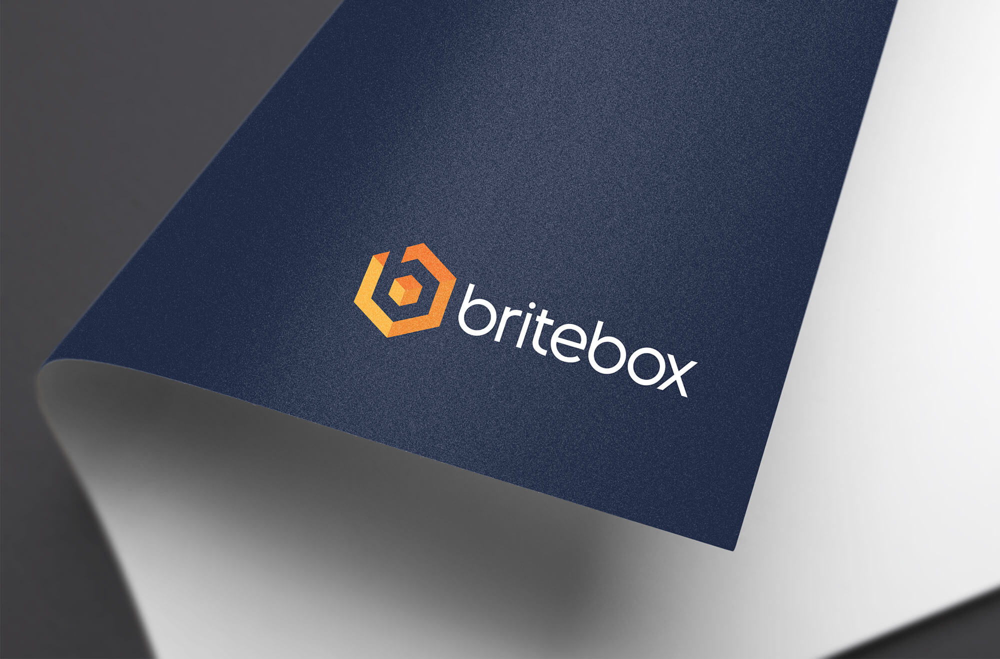

Britebox Logo

Introduction
Britebox is a performance marketing company that pairs creative velocity with operational rigor. The logo needed to signal energy, clarity, and structure in a crowded lead generation market. I designed a bold mark and wordmark system that scales across digital and print and reads as confident at small sizes as it does on signage.
The Challenge
Position a new brand to feel established on day one. The identity had to communicate three attributes at a glance:
- Creativity: A sense of spark and momentum.
- Trust: A clean, modern aesthetic suitable for B2B clients.
- Order: A visual logic that reflects data-driven execution.
Design Approach
Concept: A geometric “box” form opened by a bright corner cut suggests ideas breaking out. The angled cut becomes a repeatable brand motif for backgrounds and UI accents.
Typography: A clean, sturdy sans serif for legibility and confidence. Custom kerning and a softened “B” echo the icon’s geometry.
Color: A vivid primary paired with a restrained neutral set. The palette balances energy with professionalism and holds contrast for accessibility across light and dark applications.
System thinking: The mark and wordmark work in horizontal, stacked, and icon-only variants. Safe zones and minimum sizes were defined to keep consistency across web, social, and print.
The Process
- Discovery: Competitive scan across performance marketing and SaaS to map overused motifs and find whitespace.
- Sketching: Iterations around “box,” “spark,” and “aperture” to balance dynamism with clear geometry.
- Digital exploration: Vector studies to refine angles, stroke weight, and optical balance for small-size clarity.
- Systemization: Grid, clear space, color usage, and lockup rules to make handoff easy for future designers.
Final Outcome
- Flexible logo system with horizontal, stacked, and icon variants.
- High contrast palette and type that perform across web, slideware, and out-of-home.
- Brand elements extend into UI patterns for landing pages and ads.
The identity gives Britebox an ownable visual language that reads as modern and reliable, supporting sales collateral and campaign creative without getting in the way.

